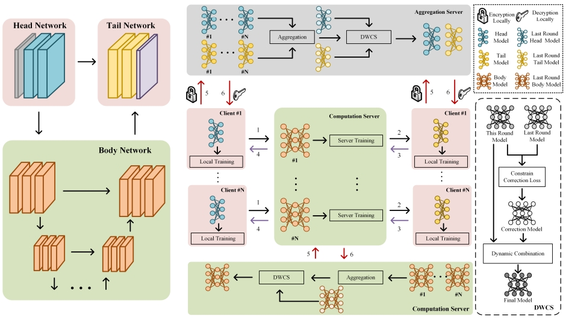
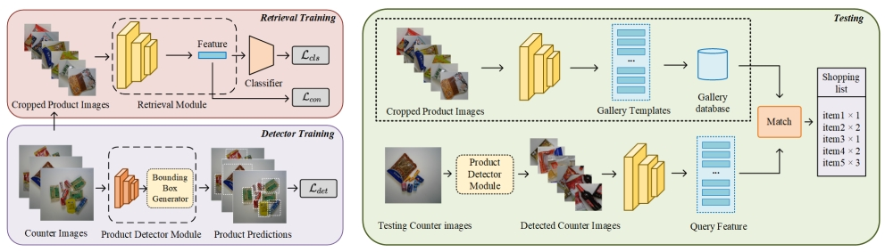
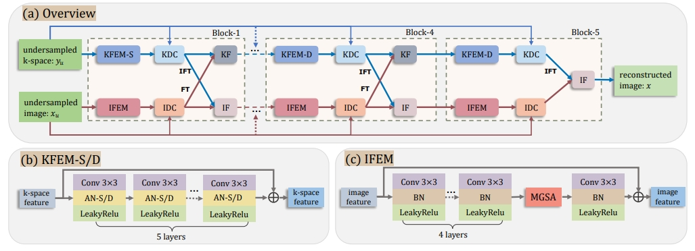
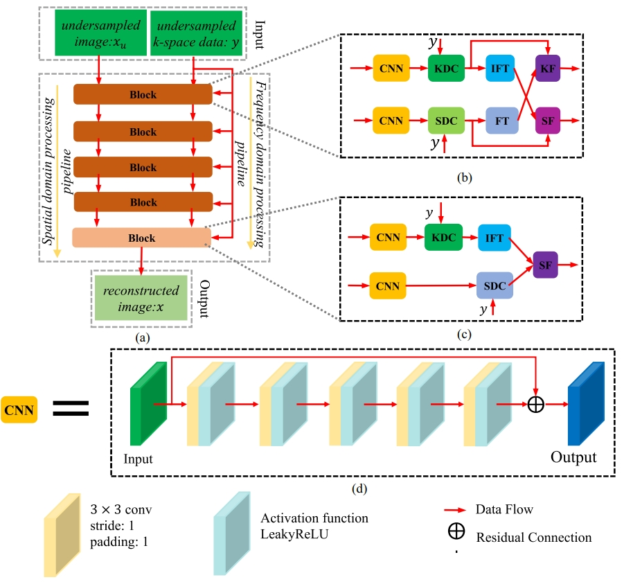
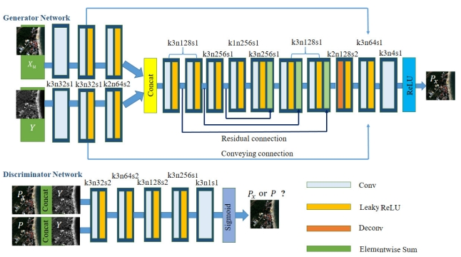
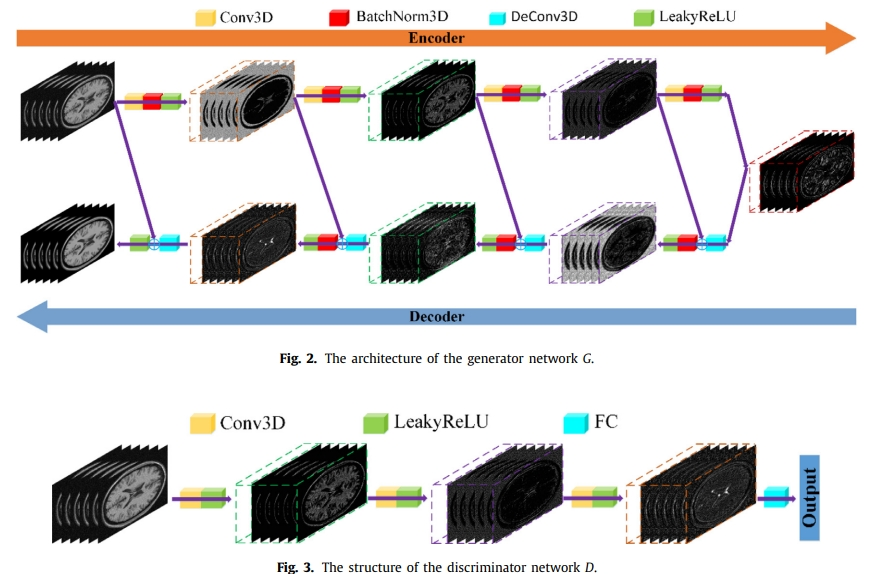
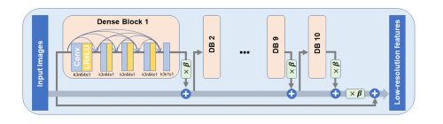

Maosong Ran (冉茂松)
Ph.D. Student
Deep Imaging Group
College of Computer Science
Sichuan University, China
Email: maosongran@gmail.com


Maosong Ran (冉茂松)Ph.D. Student
Deep Imaging Group
College of Computer Science |
|
|  |
Dynamic Corrected Split Federated Learning with Homomorphic Encryption for U-shaped Medical Image Networks |
|  |
A Robust Prototype-Free Retrieval Method for Automatic Check-Out |
|  |
Dynamic Focus Mechanism-Based Dual-Domain Reconstruction Network for Accelerated MRI |
|  |
Md-recon-net: A parallel dual-domain convolutional neural network for compressed sensing mri |
|  |
Residual encoder–decoder conditional generative adversarial network for pansharpening |
|  |
Denoising of 3D magnetic resonance images using a residual encoder–decoder Wasserstein generative adversarial network |
|  |
Simultaneous denoising and super-resolution of optical coherence tomography images based on generative adversarial network |